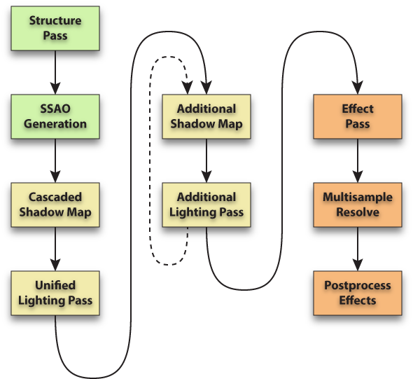

The C4 Rendering Pipeline
From C4 Engine Wiki

The C4 Engine executes a complex sequence of rendering operations during each frame of gameplay. This article gives a high-level overview of the various components of the C4 Engine rendering pipeline so that users of the engine, having some knowledge of its internal processes, can achieve more efficient results in the C4 environment. The following sections describe the rendering stages executed by the engine in the order that they occur.
Structure Pass
The engine first goes through the scene (using the portal system and cell graph) to determine what objects are visible to the current camera. Once these have been collected, the appropriate detail levels are determined, and the objects are rendered with a special shader to the structure buffer. The structure buffer is a four-channel 16-bit floating-point buffer that holds a 32-bit per-pixel linear depth and two 16-bit per-pixel screen-space derivatives of this depth. If motion blur is enabled, an additional two-channel 16-bit floating-point buffer holds the per-pixel screen-space velocity. The linear depth information is used in later stages of the rendering pipeline that need it to perform specific calculations with it.
SSAO Generation
If screen-space ambient occlusion (SSAO) is enabled, then the engine renders a full-screen pass that calculates an approximate ambient occlusion at each pixel using the depth information in the structure buffer. The resulting ambient occlusion data is stored in a texture map that's used later to modify the intensity of the ambient lighting.
Cascaded Shadow Map
If an infinite light is visible to the camera, then a cascaded shadow map is rendered next. The results are stored in an array texture that is used to draw shadows in the unified lighting pass.
Unified Lighting Pass
The unified lighting pass renders either the combined contribution of the ambient light and the infinite light or just the ambient light if no infinite light (with unified lighting enabled) is visible to the camera. Most of the major shading for the entire scene takes place here. The ambient light takes SSAO and radiosity spaces into account, and the infinite light uses the previously-rendered cascaded shadow map to draw shadows. The infinite light typically affects everything in an outside environment, but there are situations in which part of the scene is rendered with unified lighting and part is rendered with only ambient lighting. (For example, if the camera is inside a building and looking outside through a door or window.)
If a skybox is visible, then it is the last thing rendered in the unified lighting pass. This maximizes efficient use of hierarchical z-buffering hardware.
Effect visibility is determined during the unified lighting pass, but effects are not rendered until a later stage.
Additional Lighting Passes
If there are more light sources visible to the camera, then their contributions are rendered after the unified lighting pass. The engine uses a complicated algorithm to determine which lights in the scene affect regions that are visible to the camera. For each of these lights, the engine also figures out which objects in the scene may cast shadows into visible regions, and this usually includes objects that are not directly visible and thus never actually rendered.
For each visible light, the engine first renders shadows for all of the possible shadow castors for that light. For a point light, this involves rendering a cube shadow map, and for a spot light, this involves rendering a 2D shadow map. (There can also be additional infinite lights that involve rendering cascaded shadow maps.) Then the engine renders all objects that are both visible and illuminated by the light, being sure to prevent light from reaching surfaces that are in shadow. An object has a different shader for each of the different types of light supported by the engine.
Effect Pass
Once the unified lighting pass and all additional lighting passes have been rendered, the special effects that were previously determined to be visible are rendered. There are a few different effect rendering stages. The first stage renders opaque effects, such as scorch mark decals, that are always applied to previously rendered opaque objects. In the second stage, transparent effects that need to be sorted, such as fire and smoke, are rendered from furthest to nearest. Finally, in the third stage, other transparent effects, such as certain particle systems that don't need to be sorted, are rendered.
Some effects use the depth information in the structure buffer to modify their appearance. For example, particles are able to use the depth to soften themselves when they get close to solid geometry so that clipping artifacts are not visible.
Multisample Resolve
After everything in the scene has been rendered, the multisampled rendering buffer is resolved into a single-sampled buffer to apply antialiasing.
Postprocess Effects
The final pass rendered by the engine takes care of postprocess effects. These are applied to the entire screen and have a constant performance cost that does not depend on the number of visible objects. The postprocess effects rendered by the engine at this point in the rendering pipeline are motion blur, glow and bloom, distortion effects, and a final color transformation.